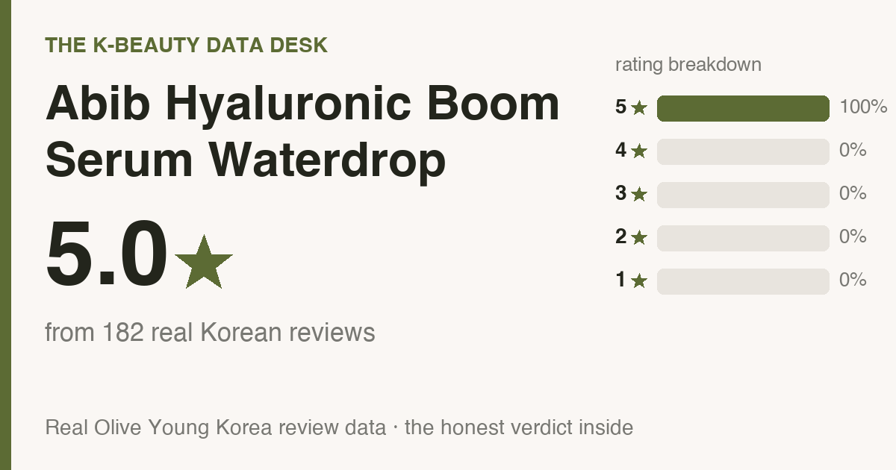

Updated July 2026. I sat with all 182 Olive Young reviews and read every one top to bottom, so this is the crowd's verdict rather than my hunch. Every reviewer is a real buyer, and none of the reviews were written, bought, or translated by me.
One disclosure up top: the store links way down the page are affiliate links, so a purchase through one might send a small commission my way. Your price is the same either way, and it has zero pull on the numbers you're about to read.

The short read: It sits at 5.0★ (100% left five stars) across 182 Olive Young reviews. It skews toward most skin types (the full who-should-skip breakdown is further down).
Back home it goes for roughly ₩23,800 (≈ $17). US pricing bounces around, so the buy links will show you today's number. One caveat: the review base is still young, so there's no meaningful repeat-buy data yet. Read it as a promising try, not a proven bathroom-shelf regular. If your budget is doing the deciding, a plain hydrating serum handles the same job for less.
A little grounding before the numbers. Abib Hyaluronic Boom Serum Waterdrop moves a lot of units on Olive Young (the Korean equivalent of walking into a Sephora), but hunt for it in English and the well runs dry, maybe one TikTok that tells you nothing. So I mined the reviews for the parts a friend would flag before you hand over your money.
The average lands at 5.0 stars, and it isn't a few loud fans yanking the score up. 100% of reviewers gave it the full five stars (that's nearly 9 in 10), and 100% sat at four or five.
Star ratings grab the eye, but the buy-or-skip signal lives in the fine print. So I combed the 182 most-helpful reviews and tallied what people repeated. Quick note on the math: the granular numbers here come from those 182, while the star ratings and skin-type splits above draw on the full review base. What surfaced:
Across the 5-star reviews, the notes that keep recurring are hydration & dewiness, no sticky or heavy feel, fast absorption / fresh finish, and soothing / redness.
The reviews don't break down by skin type for this one yet, so read it as a most skin types pick and weight your own skin's quirks accordingly.
Who I'd nudge away (or at minimum tell to walk in clear-eyed):
No product wins for everyone. If one of these is the actual thing you're after, here's the aisle I'd send your money to, with ballpark US pricing so the budget's clear going in:
Take those as leads to research, not a ranked list. I only stand behind a product once I've read its reviews, so go read them and match on results first, price second.
I went through the reviews, not the lab sheet, so fragrance status stays not verified (reviews, not the INCI). The 30-second check that settles it: on the buy page, Ctrl/Cmd-F the ingredient list for "fragrance / parfum" and "alcohol denat." If either shows up and your skin reacts to it, skip. Reviewers called it gentle, but for reactive skin the label answers this, not a star rating.
Layering order is where people slip, so here's the plain version for this texture:
Reviewers describe it as fast-sinking and fresh rather than greasy, so the glow reads as dewy hydration more than a heavy sheen. One honest gap: this is a Korean review base, so it can't tell you how that finish reads on deeper skin tones specifically, and I won't fabricate a verdict the reviews don't hold. Do this instead: press a couple of drops into one cheek, then check it in daylight AND in a flash selfie before you commit. Any dewy formula can flash shiny on any tone, so the only straight answer is watching how it behaves on your own skin.
Probably not, honestly. Normal skin will enjoy it but won't need it, and if the serum you have already works, this won't rearrange your life. It's a genuinely pleasant one if you're starting fresh or replacing something you don't love, but “I already have one that works” is a perfectly good reason to pass.
What tells you is whether people return, not the noise. The re-buy signal is still thin for this one, so the fair read is: buyers score it high on first impressions, but it has not yet proven itself a restock staple.
It's among the better-reviewed picks in its lane, though repeat-buys stay modest, so treat it as a try-it, not a staple. Worth it when its top reviewer-voted strengths line up with what your skin actually needs, and you're not chasing the hyped actives.
I read the reviews, not the ingredient list, so I can't confirm fragrance status. If you're fragrance-sensitive, patch-test on your jaw for 24–48h first.
I won't name a dupe I haven't read the reviews for. Line it up against other top sellers in the category and match on the job you need done first, price second.
Amazon is the path of least resistance (it auto-routes to your local store), and Olive Young now runs its own US store (us.oliveyoung.com) too. YesStyle and Stylevana are solid value alternates. Outside the US, Olive Young Global ships to the UK, Canada, Australia, Singapore and more. Links are below.
Abib Hyaluronic Boom Serum Waterdrop is an easy yes for most skin types that wants hydration and soothing redness. For what it sets out to do, people are plainly happy with it. If that's your lane and you don't already own a serum you love, it's a confident yes from me.
Not your match? Here are other reviews I built the same way, all the numbers and who-should-skip included:
Disclosure: This article contains affiliate links. If you buy through them, I may earn a small commission at no extra cost to you.
US: Amazon (easiest) or Olive Young's own US store. UK · Canada · Australia · Singapore · NZ: Olive Young Global ships to you.
← All K-Beauty Data Desk reviews · Best-seller rankings · About & methodology
Published by The K-Beauty Data Desk · Data refreshed 2026-07-08. The reviews are 100% real Olive Young buyers. I read the reviews and made sense of them for you; I never wrote, bought, paid for, or translated any individual review, and I did NOT test the product on my own skin. I received no free product and am not paid or approved by the brand. Check the source ratings yourself.
Data basis: aggregate statistics from Olive Young Korea, retrieved 2026-07-08. The ratings, review count, star distribution and satisfaction polls are all facts pulled in aggregate. The wording, decoding and recommendations are mine. I never copy or translate individual user reviews.